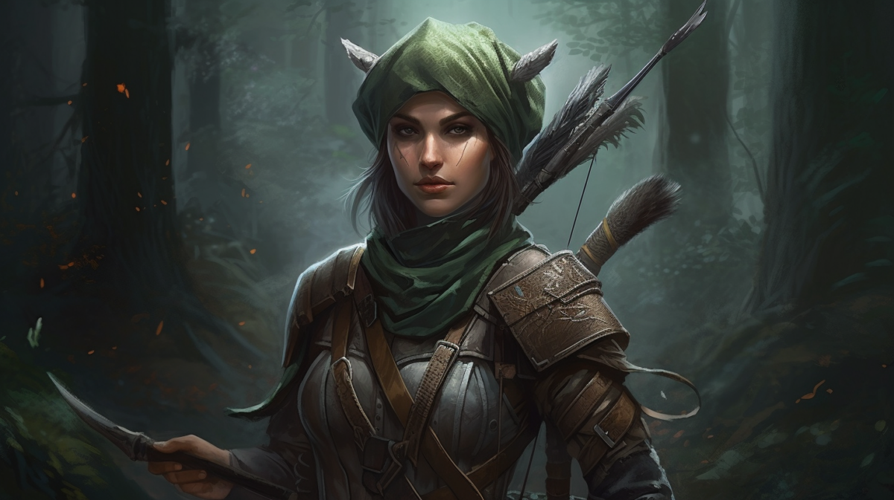
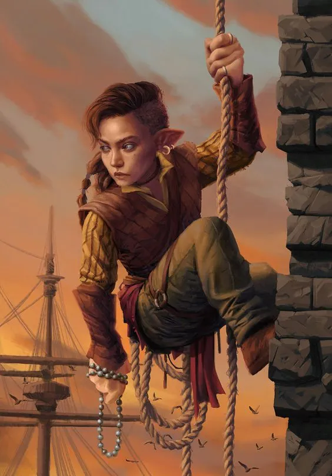
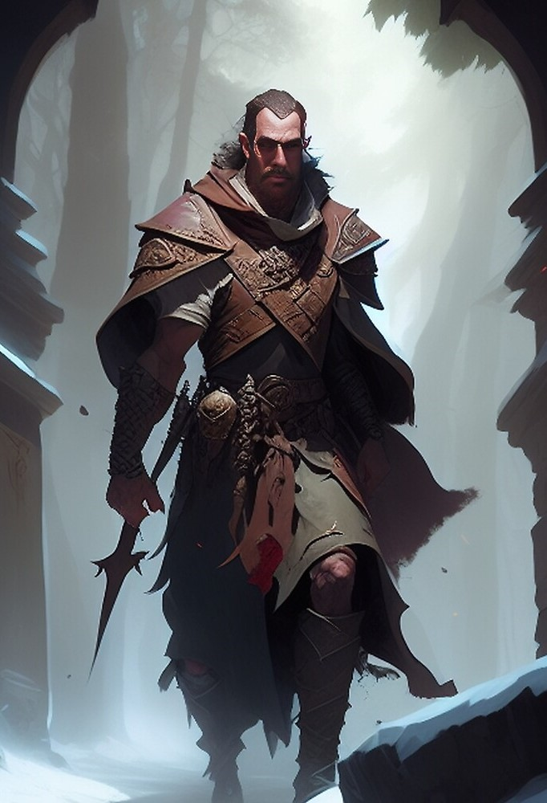
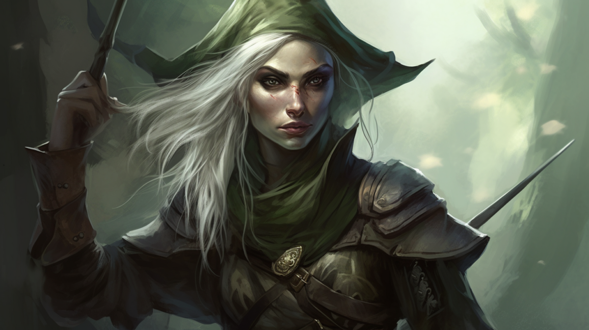
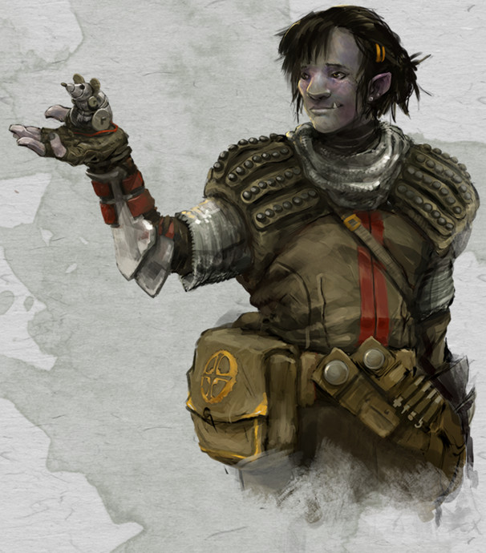
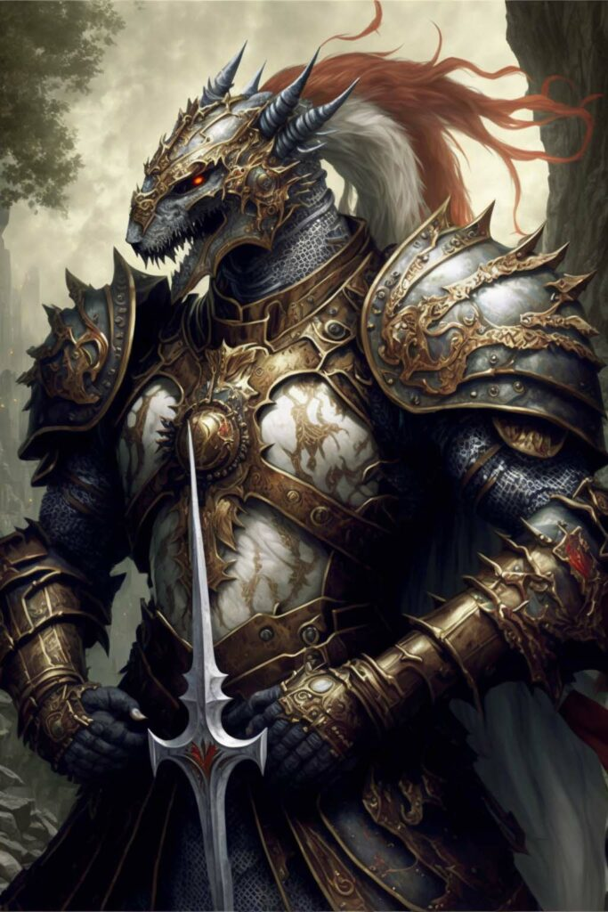
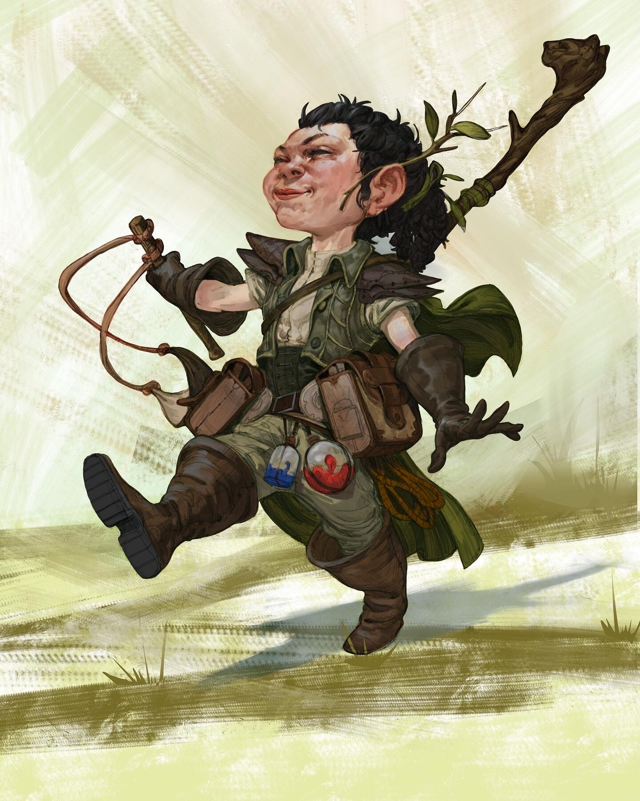
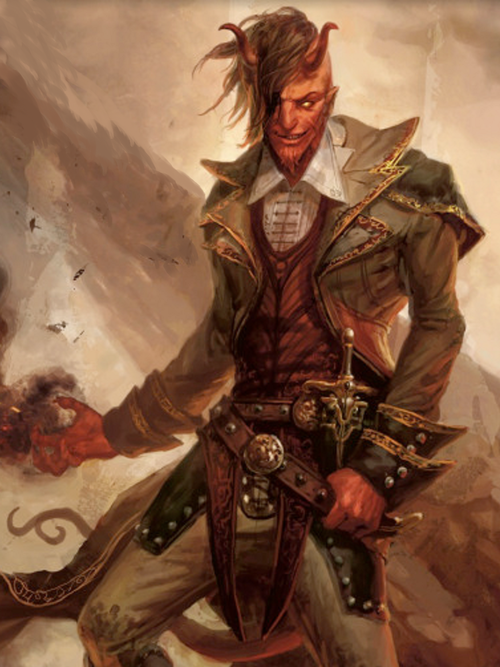

Les races

Elfes
Au Grand Duchy, les elfes se font rares. Ils restent souvent en communauté et se dévouent à la magie.
Ils existent néamoins des elfes qui ne suivent pas ces traditions et se fondent aux habitants plus communs.

Halfelins
Discrets par nature, nombreux sont les halfelins se faisant passer pour des nains afin d'éviter les accusations de voleur qui beaucoup de personne leur donnent dans ce pays.
Leur réputation ne venant pas de nul part, les halfelins représentent une grande partie des serruriers de Grand Duchy.

Humains
Comme dans beaucoup d'autres pays, les humains sont très courants au Grand Duchy. Leur capacité d'adaptation dans les différents domaines les rendent utiles au sein de la societé.
Allant de guerrier barbare à mage, les humains sont très polyvalent.

Nains
Aussi courants que les humains, les nains ont pris une place importante au Grand Duchy. Parvenu même à élire un dirigeant autre q'humain pour la première fois dans l'histoire de Kosmon, ils ne sont pas prêts de s'arrêter là.
Leurs ambitions politiques sont aussi redoutables que les armes qu'ils forgent.

Demi-Elfes
Bien que nombreux au Grand Duchy, il es rare d'en voir en ville. En effet, les demi-elfes se sont quasiment tous exclus dans les forêts de Grand Duchy.
Pas entièrement humains, pas complétement elfes, ils cherchent sans cesse leur place dans ce monde et sont prêts à tout pour prouver leur courage et leur férocité.

Demi-Orcs
Souvent confondu avec leur parents orcs, les demi-orcs surprennent de par leur intelligence et leur force. Peuple moqué depuis longtemps, les Demi-Orcs montrent un sang-froid hors norme dans la vie courante et relâche toutes leur colère en combat.

Drakeides
Sans doute le peuple le plus rare au Grand Duchy, les Drakeides intimident fréquemment les autres peuples. Leur culture si particulière jugée souvent barbare est en danger au Grand Duchy et nombreux sont les Drakeides cherchant à tout prix à la conserver.
Il n'est pas rare qu'ils deviennent paladins afin de montrer leur pureté aux autres peuples afin de remonter dans leur estimes.

Gnomes
Habitants de la nature, les Gnomes ont développés une amitié particulière avec les demi-elfes.
Les Gnomes sont difficiles à énerver lorsqu'on les connait mais peuvent se montrer très grincheux auprès des inconnus.

Tieffelins
Les Tieffelins ne connaissent pas la définition du mot "nuance". Soit complétement bons, ils luttent jusqu'au bout de leur vie pour faire régner la lumière, soit complétement mauvais, ils ne sèment que chaos derrière eux.